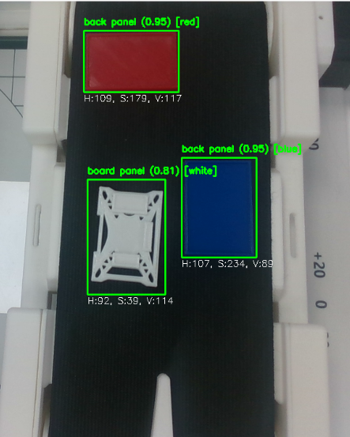
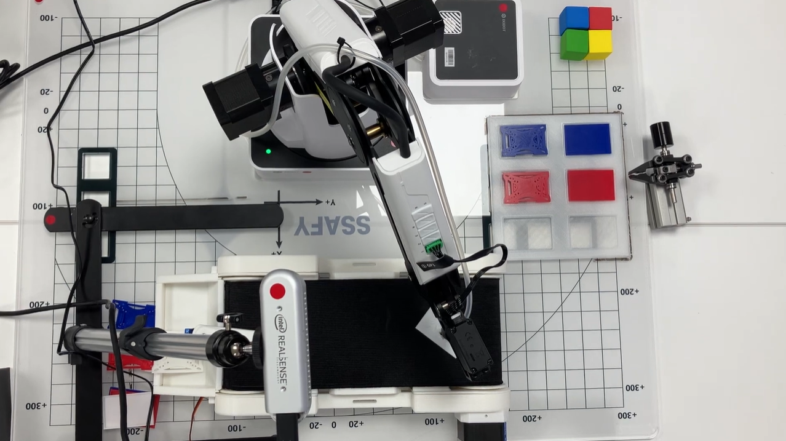
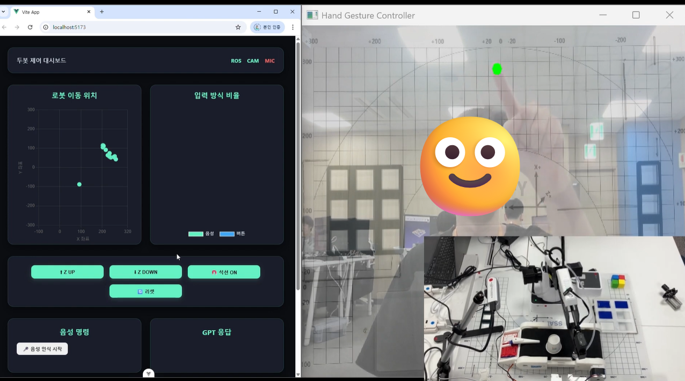
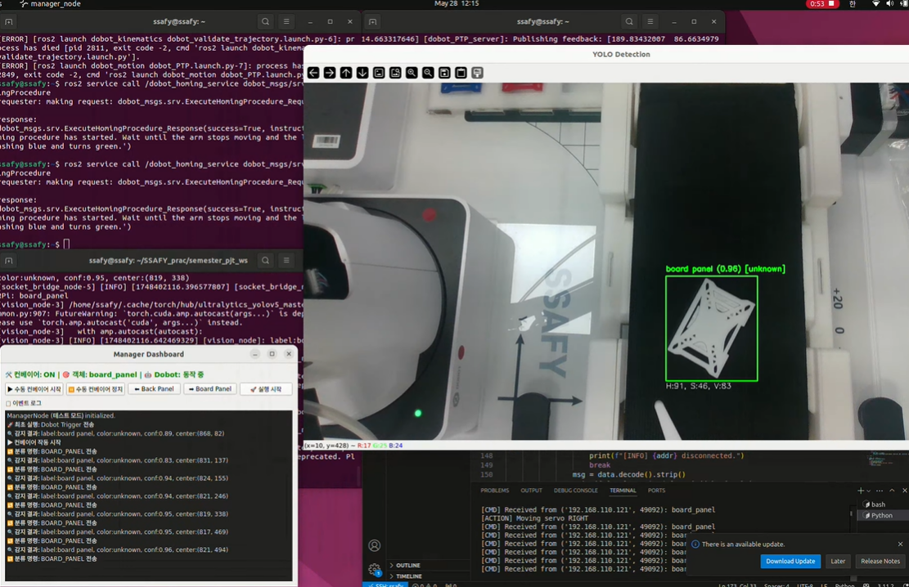

Project Overview
이 프로젝트는 ROS2를 기반으로 한 스마트 팩토리 셀을 구현한 것입니다. Dobot 매니퓰레이터, 컨베이어 벨트, AI 비전 카메라, 음성 인식 모듈을 통합하여 지능형 공정 자동화 시스템을 구축했습니다.
사용자는 웹 대시보드를 통해 실시간으로 공정 상태를 모니터링하고 제어할 수 있으며, AI 비전을 통해 물체를 인식하고 분류하여 자동으로 작업을 수행합니다.
Key Features
- ROS2 Integration: 모든 하드웨어 컴포넌트(로봇팔, 컨베이어, 센서)를 ROS2 노드로 통합 제어
- AI Vision: YOLO 기반 객체 인식으로 물품 분류 및 위치 추적
- Voice Control: 음성 명령을 통한 공정 제어 및 상태 조회
- Real-time Dashboard: 웹 기반의 실시간 모니터링 및 제어 인터페이스
My Role & Contributions
저는 이 프로젝트에서 시스템 통합 및 백엔드 개발을 담당했습니다.
- ROS2 통신 아키텍처 설계 및 노드 간 데이터 흐름 최적화
- 웹 대시보드와 ROS2 시스템 간의 WebSocket 브리지 구현
- Dobot 제어 알고리즘 및 경로 계획 구현
- 전체 시스템 통합 테스트 및 디버깅
Tech Stack
ROS2 (Humble)
Python
OpenCV
YOLOv8
PyQt5
MediaPipe
TCP Socket
Project Gallery



